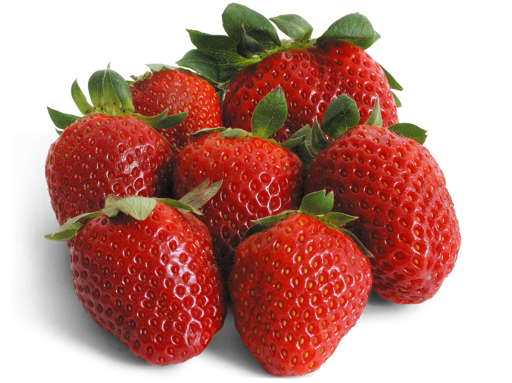

DIETA DE LA FRESA

Las fresas son frutas que aportan pocas calorías. Se componen de agua e hidratos de carbono.
Considerada como fruta afrodisíaca, rica en vitamina C, propiedades terapéuticas, desintoxicantes, efecto diurético.
Cabe destacar su aporte de fibra, que mejora el tránsito intestinal. Y mejoran la calidad de la piel.